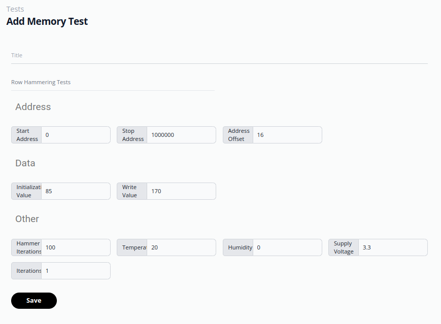
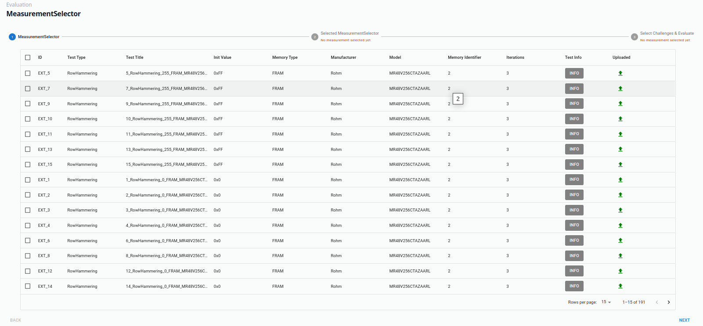

Graphical User Interface
The implementation provides a web interface implemented in React utilizing Material UI components. To install the packages manually the tools yarn or npm can be used. We recomment to use yarn to to its parallel installation and overall better performance.
Setup
First nodejs and npm needs to be installed to build the application
sudo apt-get install nodejs npm
when using yarn as a build tool, execute the following command:
npm install --global yarn
To install the required packages, the following command must be executed directly in the test_hub_frontend:
yarn
After installing all packages in the node_modules folder, the gui can be started by the following command
yarn start
GUI Elements
After compiling the web application, the graphical user interface is accessable by localhost:3000. If no current user session is running, the logging page is shown.

If no user is created refer to Backend Currently the dialog to register new users is not implemented and needs to be done manually in the test execution backend.
Dashboard
After the logging the dashboard is visualized showing general information, like the connected devices. the currently scheduled tests, logging messages and performance information to monitor the backend or the visualization of live data, e.g. when measurement devices like SMUs or oscilloscopes are connected. The dashboard is organized as grid with three rows, and can be customized by adding or deleting certain widgets.

Device Manager
The device manager allows the discovery of devices within the network. These devices or microservices are registered via the messaging service implemented in the backend, a detailed explanation of which will be provided in the backend chapter.
Additionally, users have the option to manually add devices through the designated “Add Device Manually” button. After the device was added, a heartbeat signal is initiated over the specified interface, providing information about the current state of the device. Furthermore, device specific information is shown on the device info page.

Test template generation
By clicking on “Add Template” a new test template can be added. The list of template classes is shown, which is automatically generated, benerated based on the configuration provided in the backend, explained later.
By selecting the test template category, another auto generated dialog is shown, based on the selected test template config from the backend. By pressing “Save” the template is added and can later be assigned to a test instance.
{kind=link}
Scheduling of Tests
After saving the test template the user gets forwarded to the test Schedule page. There a test instance is generated, by selecting a test template and assigning an executor, as well as a sample instance to it. These three components form a test instance which can be scheduled, by pressing “Schedule”. This adds the test to the queue of scheduled test of the executor, running a micro-service. When selecting multiple iterations. Each iteration is executed sequentially in the test queue. If multiple test templates are scheduled on multiple executers, the assignment and execution is fully parallel.
After saving the test template, users are redirected to the Test Schedule page, where a test instance is created. This process involves selecting a test template, assigning an executor, and attaching a sample instance. Together, these elements form a test instance, which can be scheduled by clicking “Schedule”. Once scheduled, the test is added to the queue of scheduled tests managed by a micro-service running in the background.
For multiple iterations, each iteration is executed sequentially within the test queue. If multiple test templates are scheduled across multiple executors, the assignment and execution processes operate in full parallelism, ensuring efficient handling of tasks.
The status of each test execution can be seen on the Status page. Here also live plot components should be added. (Currently not implemented)
Test Selection and Filtering
Mesurement results are stored in a seperated Postgres database, which supports a seperation between the measurement data and the states and config of the GUI and backend. This mechanism is explained in the backend chapter. On the Evaluation Selection Page, multiple measurements can be selected for further analysis and visualization.
{kind=link}
Based on the selected measurements, differnet post-processing and visualization algorithms are suggested, which can be customized. The visualization is executed by dedicated evaluation runner in the backend.

Evaluation of Raw Results
In the results view, the current state of the visualizer runner in the backend is visualized. After finishing the visualization and post-processing, the result can be displayed.
Currently the visualization algorithms supported by the runner are hardcoded. We are working towards generalization of the visualizer and post-processors, configurable with json files as well. The current visualizer supports matplotlib, stored as json files, which can be displayed utilizing the d3 library.

Wafer visualizer
It is also possible to evaluate wafers, such as those used for carbon nanotube field-effect transistors. To facilitate this, a dedicated wafer visualization component was developed.